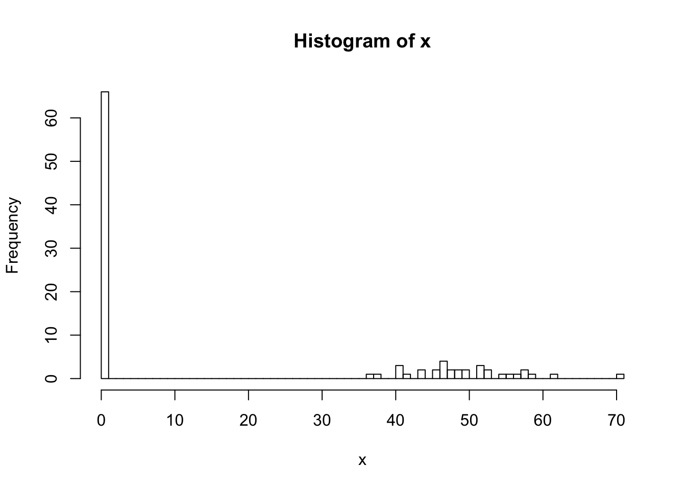
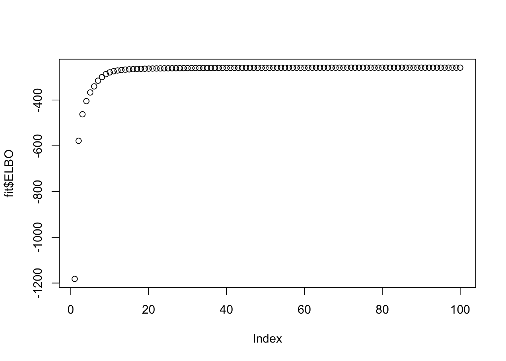
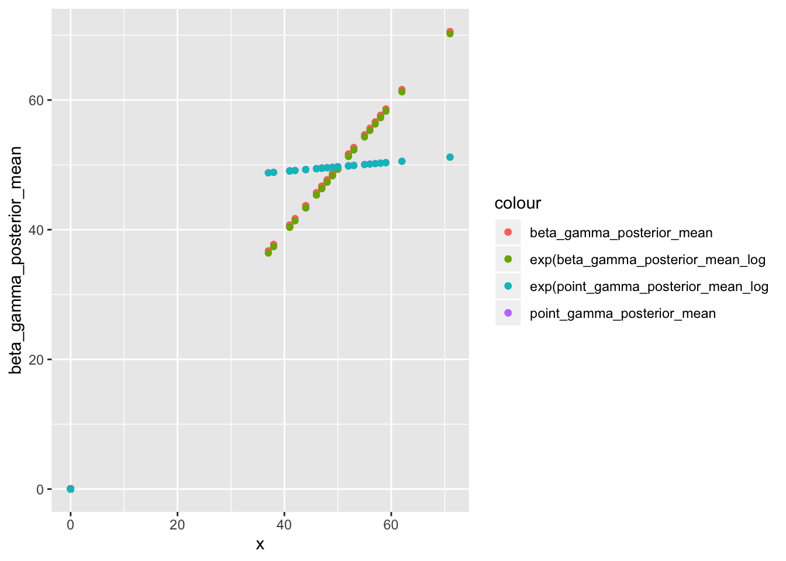
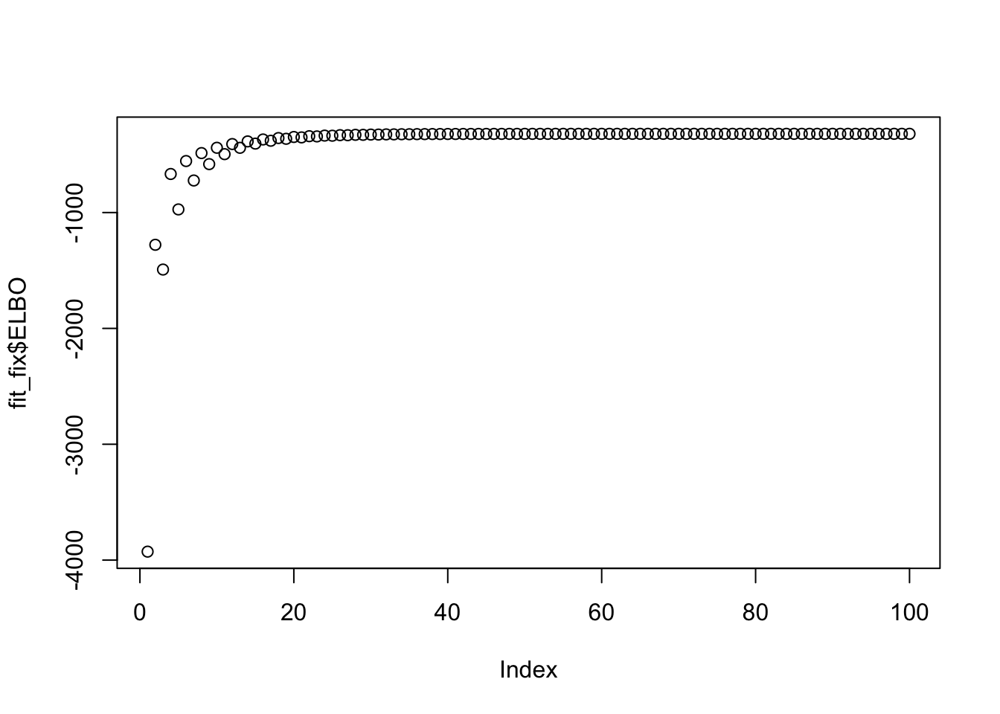
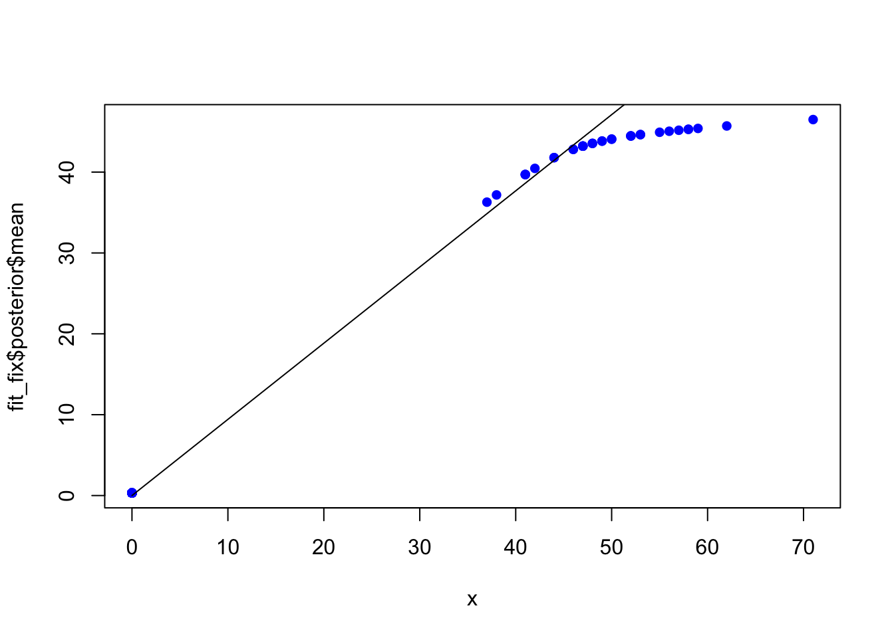
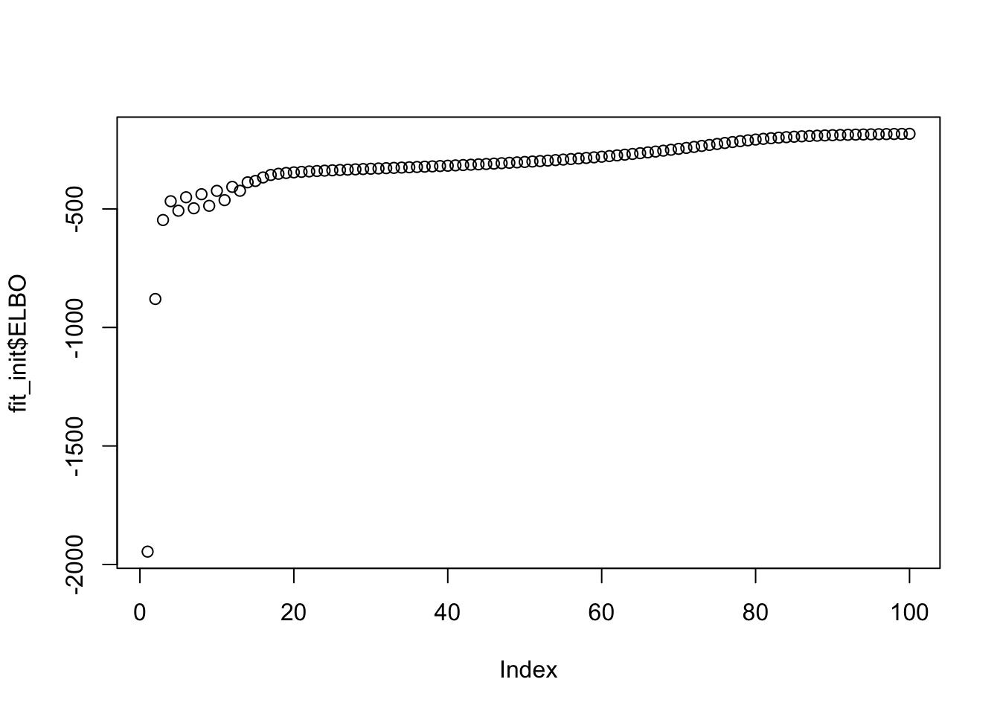
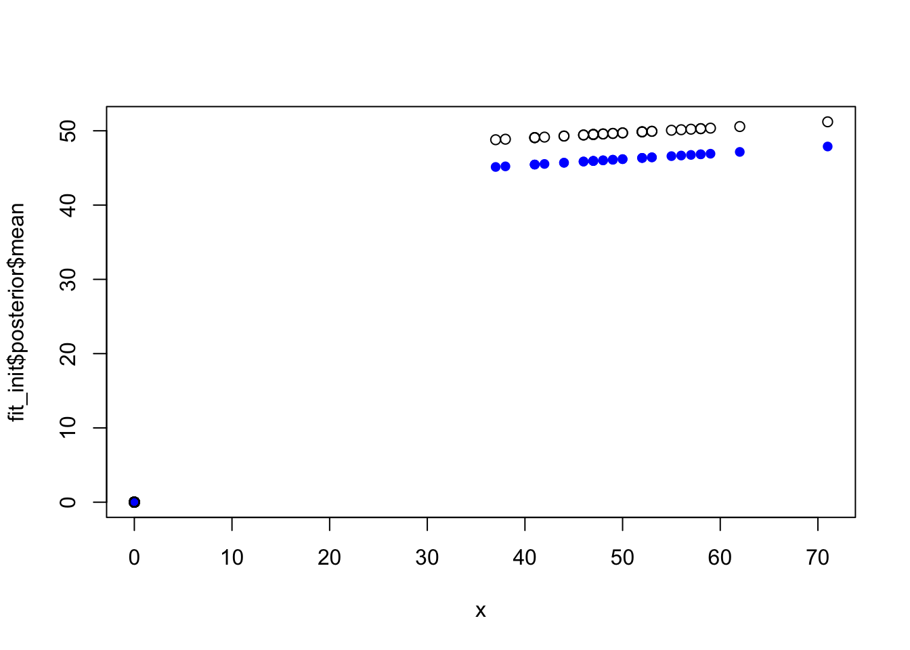

Last updated: 2019-11-12
Checks:
Knit directory: ebpmf_demo/
This reproducible R Markdown analysis was created with workflowr (version 1.5.0). The Checks tab describes the reproducibility checks that were applied when the results were created. The Past versions tab lists the development history.
Great! Since the R Markdown file has been committed to the Git repository, you know the exact version of the code that produced these results.
Great job! The global environment was empty. Objects defined in the global environment can affect the analysis in your R Markdown file in unknown ways. For reproduciblity it’s best to always run the code in an empty environment.
The command set.seed(20190923) was run prior to running the code in the R Markdown file. Setting a seed ensures that any results that rely on randomness, e.g. subsampling or permutations, are reproducible.
Nice! There were no cached chunks for this analysis, so you can be confident that you successfully produced the results during this run.
Great job! Using relative paths to the files within your workflowr project makes it easier to run your code on other machines.
Great! You are using Git for version control. Tracking code development and connecting the code version to the results is critical for reproducibility. The version displayed above was the version of the Git repository at the time these results were generated. wflow_publish or wflow_git_commit). workflowr only checks the R Markdown file, but you know if there are other scripts or data files that it depends on. Below is the status of the Git repository when the results were generated:
Ignored files:
Ignored: .Rhistory
Ignored: .Rproj.user/
Ignored: analysis/figure/
Ignored: analysis/nmf_sparse8_cache/
Ignored: analysis/nmf_sparse9_cache/
Untracked files:
Untracked: Rplot.png
Untracked: Untitled.Rmd
Untracked: Untitled.html
Untracked: analysis/.ipynb_checkpoints/
Untracked: analysis/Experiment_ebpmf_simple.Rmd
Untracked: analysis/demo_ebpm_beta_gamma2.Rmd
Untracked: analysis/demo_ebpmf_beta_gamma.Rmd
Untracked: analysis/draft.Rmd
Untracked: analysis/ebpm_gamma_mixture_experiment.Rmd
Untracked: analysis/ebpmf_demo.Rmd
Untracked: analysis/ebpmf_rank1_demo2.Rmd
Untracked: analysis/plot_g.Rmd
Untracked: analysis/softmax_experiments.ipynb
Untracked: cache/
Untracked: data/nmf_sparse8_fit_ebpmf_gm_mle.Rds
Untracked: data/nmf_sparse8_fit_ebpmf_gm_mlem.Rds
Untracked: figure/
Untracked: verbose_log_1571583163.21966.txt
Untracked: verbose_log_1571583324.71036.txt
Untracked: verbose_log_1571583741.94199.txt
Untracked: verbose_log_1571588102.40356.txt
Unstaged changes:
Modified: .gitignore
Modified: analysis/Compare_ebpmf_nmf.Rmd
Modified: analysis/Compare_ebvaepm_ebpm.Rmd
Modified: analysis/Experiment_ebpmf_rank1.Rmd
Modified: analysis/ebpm_demo.Rmd
Modified: analysis/nmf_sparse.Rmd
Modified: analysis/nmf_sparse2.Rmd
Modified: analysis/nmf_sparse3.Rmd
Modified: analysis/nmf_sparse6.Rmd
Modified: analysis/nmf_sparse7.Rmd
Modified: analysis/nmf_sparse8.Rmd
Modified: analysis/nmf_sparse9.Rmd
Modified: analysis/softmax_experiments.Rmd
Modified: analysis/test_ebpm_gamma_mixture_single_scale.Rmd
Modified: data/nmf_sparse8_fit_ebpmf_gm.Rds
Note that any generated files, e.g. HTML, png, CSS, etc., are not included in this status report because it is ok for generated content to have uncommitted changes.
These are the previous versions of the R Markdown and HTML files. If you’ve configured a remote Git repository (see ?wflow_git_remote), click on the hyperlinks in the table below to view them.
File
Version
Author
Date
Message
Rmd
347b579
zihao12
2019-11-13
demo_ebpm_beta_gamma.Rmd
Rmd
3157a1b
zihao12
2019-11-13
start coding ebpm_beta_gamma
Introduction
This is a demo for ebpm with prior family beta*gamma. Model: \[
\begin{align}
& x_i \sim Pois(\lambda_i)\\
& \lambda_i = p_i v_i\\
& v_i \sim Gamma(\alpha, \beta)\\
& p_i \sim Beta(a, b)
\end{align}
\] The algorithm uses an equivalent model: \[
\begin{align}
& x_i \sim Bin(z_i, p_i)\\
& z_i | v_i \sim Pois(v_i)\\
& v_i \sim Gamma(\alpha, \beta)\\
& p_i \sim Beta(a, b)
\end{align}
\]
Summary
Result depends heavily on initialization!
There are some numerical issues …
rm(list = ls())
library(stats)
devtools::load_all("../ebpm") ## not installed yet in case other scripts depend on older version Loading ebpm#library(ebpm)
Main functions
ebpm_beta_gamma <- function(x, maxiter = 100, seed = 123,
fix = list(a = FALSE, b = FALSE, alpha = FALSE, beta = FALSE), g_init = NULL){
set.seed(seed)
res_init = initialize_ebpm_beta_gamma(x = x, seed = seed, g_init = g_init)
vparam = res_init$vparam
g = res_init$g
hidden_posterior = compute_posterior(x = x, vparam = vparam)
fit = ebpm_beta_gamma_workhorse(x = x, g = g, vparam = vparam,
hidden_posterior = hidden_posterior, maxiter = maxiter, fix = fix, fix_val = g_init)
fit[["posterior"]] = list(mean = (fit$hidden_posterior$p)*(fit$hidden_posterior$v),
mean_log = (fit$hidden_posterior$logp) + (fit$hidden_posterior$logv))
return(fit)
}
## workhorse function
ebpm_beta_gamma_workhorse <- function(x, g, vparam, hidden_posterior, maxiter = 100,
fix = list(a = FALSE, b = FALSE, alpha = FALSE, beta = FALSE), fix_val = NULL){
ELBOs = c()
for(iter in 1:maxiter){
## update vparam
vparam = update_vparam(x, g, vparam, hidden_posterior)
## compute posterior
hidden_posterior = compute_posterior(x, vparam)
## update g
g_res = update_g(x, g, vparam, hidden_posterior, fix = fix, fix_val = fix_val)
g = g_res$g
ELBO = g_res$ELBO
ELBOs = c(ELBOs, ELBO)
}
return(list(g = g, vparam = vparam, hidden_posterior = hidden_posterior, ELBO = ELBOs))
}
## initialize ebpm_beta_gamma
initialize_ebpm_beta_gamma <- function(x, seed = 123, g_init = NULL){
set.seed(seed)
n = length(x)
if(is.null(g_init)){g = list(alpha = 0.99, beta = 0.1, a = 100, b = 100)}
else{g = g_init}
vparam = list(alpha = replicate(n, g$alpha),
beta = replicate(n, g$beta),
a = replicate(n, g$a),
b = replicate(n, g$b),
mu = replicate(n, 0.1))
return(list(g = g, vparam = vparam))
}
## update variational parameters
update_vparam <- function(x, g, vparam, hidden_posterior){
# logp, log1_p, v, logv, z are corresponding posterior mean
logp = hidden_posterior$logp
log1_p = hidden_posterior$log1_p
v = hidden_posterior$v
logv = hidden_posterior$logv
z = hidden_posterior$z
vparam$a = g$a + x
vparam$b = g$b + z - x
vparam$alpha = g$alpha + z
vparam$beta = g$beta + 1
vparam$mu = exp(log1_p + logv)
return(vparam)
}
## compute needed posterior of the hiddem variables
compute_posterior <- function(x, vparam){
p_ = compute_posterior_p(x, vparam)
v_ = compute_posterior_v(x, vparam)
z = compute_posterior_z(x, vparam)
return(list(p = p_$p, logp = p_$logp, log1_p = p_$log1_p,
v = v_$v, logv = v_$logv, z = z))
}
## update prior g
update_g <- function(x, g, vparam, hidden_posterior, fix, fix_val){
fn_params = list(x = x, vparam = vparam, hidden_posterior = hidden_posterior, fix = fix, fix_val)
opt = do.call(nlm, c(list(obj_nlm, transform_param(g)), fn_params))
g = transform_param_back(opt$estimate, fix = fix, fix_val)
ELBO = compute_elbo(g, x, vparam, hidden_posterior)
return(list(g = g, ELBO = ELBO))
}
## obj for nlm to optimize
obj_nlm <- function(g, x, vparam, hidden_posterior, fix, fix_val){
g = transform_param_back(g, fix, fix_val)
return( - compute_elbo(g, x, vparam, hidden_posterior) )
}
## function for computing ELBO
compute_elbo <- function(g, x, vparam, hidden_posterior){
# logp, log1_p, v, logv, z are corresponding posterior mean
logp = hidden_posterior$logp
log1_p = hidden_posterior$log1_p
v = hidden_posterior$v
logv = hidden_posterior$logv
z = hidden_posterior$z
ll_x = x*logp + (z - x)*log1_p - lgamma(x + 1)
neg_kl_z = vparam$mu - v + z*(logv - log(vparam$mu)) + x*log(vparam$mu)
kl_v = ((vparam$alpha - g$alpha)*logv - (vparam$beta - g$beta)*v +
vparam$alpha*log(vparam$beta) - g$alpha*log(g$beta) + lgamma(g$alpha) - lgamma(vparam$alpha))
kl_p = ((vparam$a - g$a)*logp + (vparam$b - g$b)*log1_p + compute_logB(g$a, g$b) - compute_logB(vparam$a, vparam$b))
ELBO = ll_x + neg_kl_z - kl_v - kl_p
return(sum(ELBO))
}
## functions for computing posterior for specific latent variables
compute_posterior_p <- function(x, vparam){
## compute <logp>, <log (1-p)>
p = vparam$a/(vparam$a + vparam$b)
logp = digamma(vparam$a) - digamma(vparam$a + vparam$b)
log1_p = digamma(vparam$b) - digamma(vparam$a + vparam$b)
return(list(p = p ,logp = logp, log1_p = log1_p))
}
compute_posterior_v <- function(x, vparam){
## compute <v>, <log v>
v = vparam$alpha/vparam$beta
logv = digamma(vparam$alpha) - log(vparam$beta)
return(list(v = v, logv = logv))
}
compute_posterior_z <- function(x, vparam){
## compute <z>
return(vparam$mu + x)
}
## transform parameters for nlm optimization
transform_param <- function(g){
return(c(log(g$alpha), log(g$beta), log(g$a), log(g$b)))
}
transform_param_back <- function(g, fix, fix_val){
g = list(alpha = exp(g[1]), beta = exp(g[2]), a = exp(g[3]), b = exp(g[4]))
## if we fix some parameter at some value, we set them here so that they won't affect obj
if(fix$alpha){g$alpha = fix_val$alpha}
if(fix$beta){g$beta = fix_val$beta}
if(fix$a){g$a = fix_val$a}
if(fix$b){g$b = fix_val$b}
return(g)
}
## compute log B(a, b)
compute_logB <- function(a, b){
return(lgamma(a) + lgamma(b) - lgamma(a + b))
}
Small experiment
set.seed(123)
n = 99
lam = replicate(n, 0)
lam[1:(n/3)] = 50
x = rpois(n, lambda = lam)
## hist of data
hist(x, breaks = 100)
fit = ebpm_beta_gamma(x, maxiter = 100)
fit2 = ebpm::ebpm_point_gamma(x)## ELOB of ebpm_beta_gamma
plot(fit$ELBO)
max(fit$ELBO)[1] -258.5157idx = 1:n
res_df = data.frame(x = x[idx], beta_gamma_posterior_mean = fit$posterior$mean[idx], beta_gamma_posterior_mean_log = fit$posterior$mean_log[idx], point_gamma_posterior_mean = fit2$posterior$mean[idx], point_gamma_posterior_mean_log = fit2$posterior$mean_log[idx])
library(ggplot2)Warning: package 'ggplot2' was built under R version 3.5.2ggplot(res_df)+
geom_point(aes(x = x, y = beta_gamma_posterior_mean, color = "beta_gamma_posterior_mean")) +
geom_point(aes(x = x, y = exp(beta_gamma_posterior_mean_log), color = "exp(beta_gamma_posterior_mean_log")) +
geom_point(aes(x = x, y = point_gamma_posterior_mean, color = "point_gamma_posterior_mean")) +
geom_point(aes(x = x, y = exp(point_gamma_posterior_mean_log), color = "exp(point_gamma_posterior_mean_log")) 
fit$g$alpha
[1] 0.08144006
$beta
[1] 0.003529346
$a
[1] 963.0005
$b
[1] 381.3611fit2$fitted_g$pi0
[1] 0.6666667
$shape
[1] 650.7587
$scale
[1] 0.0763674
attr(,"class")
[1] "point_gamma"
attr(,"row.names")
[1] 1Clearly ebpm_point_gamma has great shrinkage, whereas ebpm_beta_gamma does not.
Fixing g of ebpm_beta_gamma
(fixed g close to best estimate from ebpm_point_gamma)
fix = list(alpha = TRUE, beta = TRUE, a = TRUE, b = TRUE)
g_init = list(alpha = 650, beta = 1/0.07, a = 0.33, b = 0.66)
fit_fix = ebpm_beta_gamma(x, maxiter = 100, fix = fix, g_init = g_init)
plot(fit_fix$ELBO)
max(fit_fix$ELBO)[1] -320.3202plot(x, fit_fix$posterior$mean, pch = 16, col = "blue")
lines(x, fit2$posterior$mean)
initialize ebpm_beta_gamma
(using knowledge from ebpm_point_gamma)
# g_init = list(alpha = 650, beta = 1/0.07, a = 0.33, b = 0.66) ## strange numerical issues. Will investiagte later
g_init = list(alpha = 100, beta = 10, a = 0.33, b = 0.66)
fit_init = ebpm_beta_gamma(x, maxiter = 100, g_init = g_init)
plot(fit_init$ELBO)
max(fit_init$ELBO)[1] -183.1149plot(x, fit_init$posterior$mean, pch = 16, col = "blue", ylim = c(0, max(c(fit2$posterior$mean, fit_init$posterior$mean))))
points(x, fit2$posterior$mean)
fit_init$g$alpha
[1] 547.651
$beta
[1] 11.92054
$a
[1] 0.002150612
$b
[1] 0.004260042Below I summarize the ELBO, and measure of divergence from truth
KL <- function(true,est){
sum(ifelse(true==0,0,true * log(true/est)) + est - true)
}
JS <- function(true,est){
0.5*(KL(true, est) + KL(est, true))
}
RMSE <- function(true, est){
sqrt(mean((true - est)^2))
}
KLs <- c(KL(lam, fit2$posterior$mean), KL(lam, fit$posterior$mean), KL(lam, fit_init$posterior$mean), KL(lam, fit_fix$posterior$mean))
JSs <- c(JS(lam, fit2$posterior$mean), JS(lam, fit$posterior$mean), JS(lam, fit_init$posterior$mean), JS(lam, fit_fix$posterior$mean))
RMSEs <- c(RMSE(lam, fit2$posterior$mean), RMSE(lam, fit$posterior$mean), RMSE(lam, fit_init$posterior$mean), RMSE(lam, fit_fix$posterior$mean))
ELBOs <- c(NaN, fit$ELBO[100],fit_init$ELBO[100], fit_fix$ELBO[100])
data.frame(KL = KLs, JS = JSs, RMSE = RMSEs, ELBO = ELBOs, row.names = c("point_gamma", "beta_gamma", "beta_gamma_init","beta_gamma_fix")) KL JS RMSE ELBO
point_gamma 0.1167793 0.1165746 0.3422549 NaN
beta_gamma 20.7343809 Inf 4.1396023 -258.5157
beta_gamma_init 5.4060815 Inf 2.2424711 -183.1149
beta_gamma_fix 41.1545923 Inf 4.1919522 -320.3202
sessionInfo()R version 3.5.1 (2018-07-02)
Platform: x86_64-apple-darwin15.6.0 (64-bit)
Running under: macOS 10.14
Matrix products: default
BLAS: /Library/Frameworks/R.framework/Versions/3.5/Resources/lib/libRblas.0.dylib
LAPACK: /Library/Frameworks/R.framework/Versions/3.5/Resources/lib/libRlapack.dylib
locale:
[1] en_US.UTF-8/en_US.UTF-8/en_US.UTF-8/C/en_US.UTF-8/en_US.UTF-8
attached base packages:
[1] stats graphics grDevices utils datasets methods base
other attached packages:
[1] ggplot2_3.2.1 ebpm_0.0.0.9004 testthat_2.2.1
loaded via a namespace (and not attached):
[1] gtools_3.8.1 tidyselect_0.2.5 xfun_0.8
[4] remotes_2.1.0 purrr_0.3.2 colorspace_1.4-1
[7] usethis_1.5.1 htmltools_0.3.6 yaml_2.2.0
[10] rlang_0.4.1 pkgbuild_1.0.3 mixsqp_0.2-3
[13] later_0.8.0 pillar_1.4.2 glue_1.3.1
[16] withr_2.1.2 sessioninfo_1.1.1 stringr_1.4.0
[19] munsell_0.5.0 gtable_0.3.0 workflowr_1.5.0
[22] devtools_2.2.1.9000 memoise_1.1.0 evaluate_0.14
[25] labeling_0.3 knitr_1.25 callr_3.2.0
[28] httpuv_1.5.1 ps_1.3.0 Rcpp_1.0.2
[31] promises_1.0.1 backports_1.1.5 scales_1.0.0
[34] desc_1.2.0 pkgload_1.0.2 fs_1.3.1
[37] digest_0.6.22 stringi_1.4.3 processx_3.3.1
[40] dplyr_0.8.1 rprojroot_1.3-2 grid_3.5.1
[43] cli_1.1.0 tools_3.5.1 magrittr_1.5
[46] lazyeval_0.2.2 tibble_2.1.3 crayon_1.3.4
[49] whisker_0.3-2 pkgconfig_2.0.3 ellipsis_0.3.0
[52] prettyunits_1.0.2 assertthat_0.2.1 rmarkdown_1.13
[55] rstudioapi_0.10 R6_2.4.0 git2r_0.26.1
[58] compiler_3.5.1